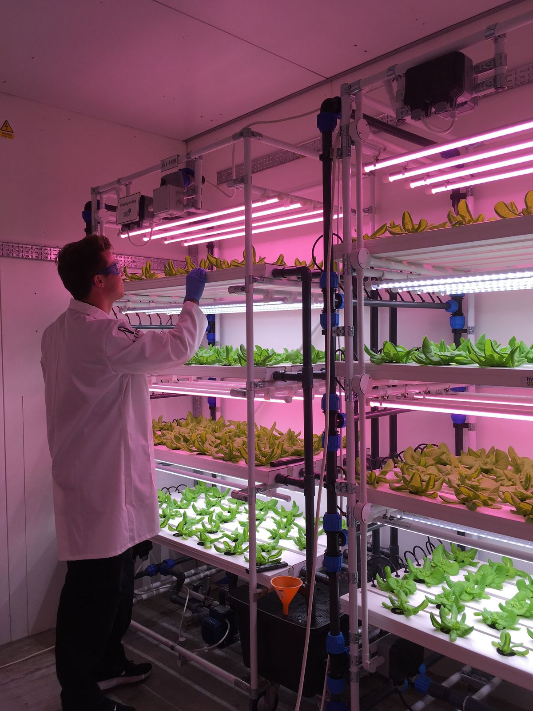
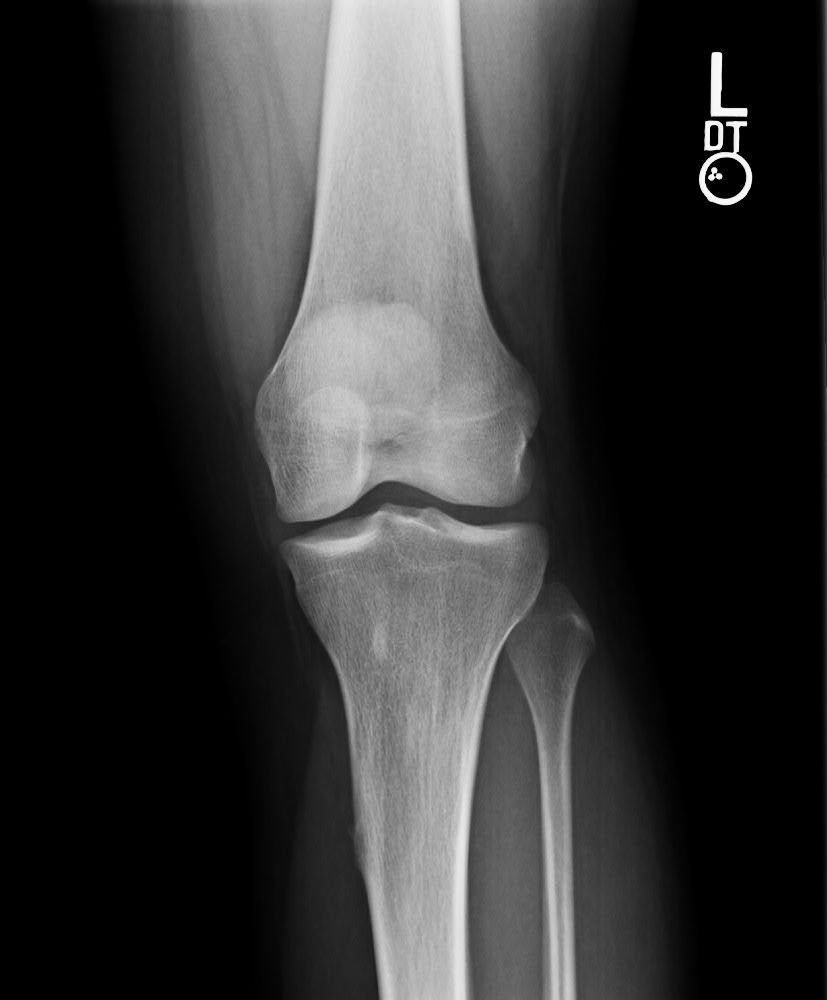
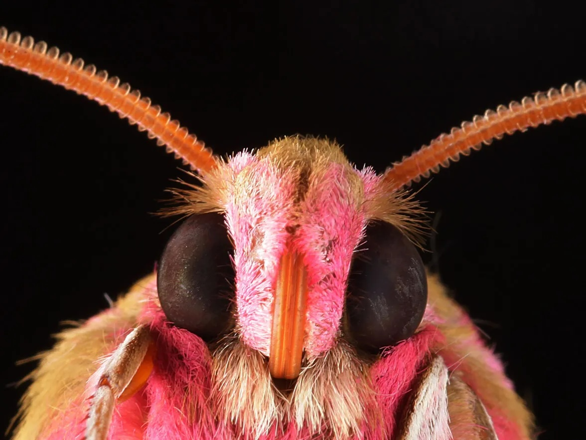

Vertical Farming Systems
Vertical farming has emerged as a potential solution to improve food security and safety for urban populations, as well as to transform wider food systems to ensure greater sustainability. Experts are divided on its feasibility.

The Science Behind X-Rays
X-Rays have become a common part of our healthcare experience. But how do they actually work?
The Iran War Is Impacting the Environment in Unseen Ways
From toxic smoke and oil spills to rising emissions, poisoned soil, and damaged ecosystems, war can reshape the environment long after the fighting stops.
Genetic Testing Revolution
Acorn Genetics is developing a low-cost, at-home DNA testing kit that enables users to privately test for genetic conditions without any traditional data privacy concerns.
Can Astronauts Tell How Fast They're Going?
Weirdly, spaceships have no direct way to gauge their own speed. Luckily, we can use some physics tricks to figure it out.

The Electrostatic World of Insects
Invisibly to us, insects and other tiny creatures use static electricity to travel, avoid predators, collect pollen, and more.